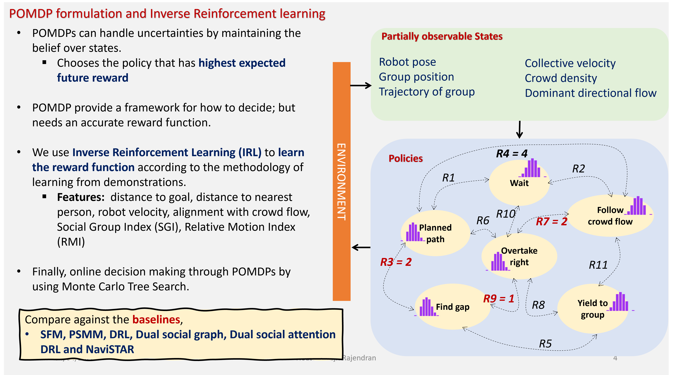
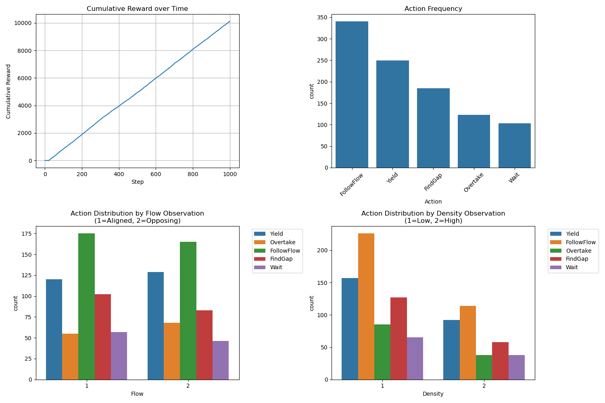
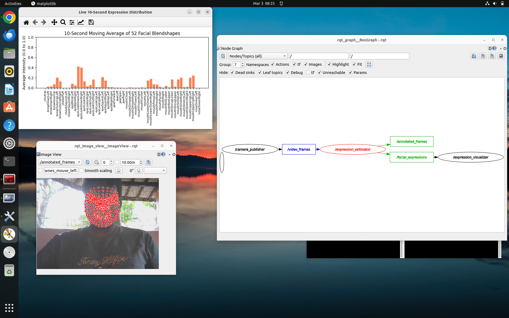

Recent Projects
- Don't blame me: A Mobile Robot's Struggle with Partial Observability in Human-Robot Shared Social Spaces
This is the research statement of the project that I have worked on 2025 at Facutly of Sustainable Design Engineering at University of Prince Edward Island, Canada. I have done the preliminary modeling and simulation (using Julia, a scientific programming language) of a simplified scenario to make sure the feasibility of the proposed method (click the title to view that). Detailed description is available below:
The Core Problem: Partial Observability Leading to Freezing
The intent of any human or social group is never completely observable to a robot agent. Imagine a robot navigating a crowded environment filled with static obstacles, individual pedestrians, and various groups of people moving in different directions. In such a scenario, the robot has no definitive way of knowing where each individual or group might move, yet it must navigate through them. As the number of these social entities (referring to both individuals and groups) increases, the robot can succumb to the "freezing robot problem" becoming paralyzed and unable to take any action toward its goal.
 Created with Nano Banana 2
Created with Nano Banana 2
Rationale 01: Justifying the need for POMDP framework
Fortunately, humans are flexible. Unlike static obstacles or preprogrammed devices like cleaning robots, humans anticipate the movements of the robot, creating a high probability that they will naturally yield space. However, this does not mean the robot can greedily cut through human groups. Not all groups function identically; even if a group appears uniform, one part might make way while another remains completely unaware of the robot's presence.
Therefore, the success of any action the robot takes depends heavily on the true state of the social group. The robot needs to consider factors such as the group's size, heading direction, and potential cohesion. By analyzing these, the robot can estimate the intent of each group. Because this is still only an estimate and the true state remains uncertain, I propose modeling the robot's high-level decision-making as a Partially Observable Markov Decision Process (POMDP). This allows the robot to maintain a "belief state", a probability distribution over the possible states of the social groups.
Preliminary work: Segmenting individuals and social groups in busy environments using a combination of morphological operations and active contouring.
The algorithm was designed and validated in MATLAB R2024b. Python version is also available
Rationale 02: Justifying the need for Game-based IRL
Another significant challenge is integrating social norms into the robot's driving behavior. Traditional approaches rely on model-based social cost functions or cost maps to define personal spaces, tuning parameters for specific situations. However, personal space and group social costs are highly variable and depend on factors that are difficult to capture through rigid mathematical parameterization.
Furthermore, for a robot to effectively navigate a crowd, it must first understand how a goal-oriented human would do so. While previous research has utilized Inverse Reinforcement Learning (IRL) for crowd navigation, these models often assume homogeneous crowds, treating every human as an identical copy. They fail to partition the human population into distinct crowds with varying abilities, features, cohesion levels, and intentions.

Overview of the method and Comparison against baselines
IRL - Strategy for Data Collection
To address this limitation, I needed a system to demonstrate authentic human navigation strategies in highly crowded spaces to the robot. To achieve this, I plan to design a gamified environment where human players are given a mission and visualized as robots within a dense crowd.
This simulated crowd will be carefully engineered to exhibit random and unique behaviors, such as varying cohesion levels, merging and splitting dynamics, and adherence to dominant pedestrian flows.
Preliminary work: Simulation of social groups using cohesion, seperation, alignment, and avoidance steering behaviors. They do not have any central coordination.
This is still true for some noisy human crowds.
Integration and Outcome: Socially-aware robot navigation
Finally, I plan to synthesize both methods to create a robust navigation system capable of handling most of the complex social situations in crowded environments. By plugging the learned reward function from the IRL demonstrations into the reward model of the POMDP's belief-state planning, the robot can rationally anticipate future states based on its observations. This will enable real-time planning, allowing the robot to accomplish its tasks efficiently while executing socially acceptable maneuvers.
- Real-time facial expression analyzer in ROS2 Ecosystem
This project is a real-time facial expression analysis pipeline built on ROS 2 Humble. It utilizes a webcam feed and Google's MediaPipe Face Landmarker (Tasks API) to detect and extract 52 distinct facial blendshapes (e.g., smiles, blinks, jaw movements).
The package includes nodes for publishing raw camera data, estimating and publishing facial landmarks as JSON strings, and a live data visualizer that tracks a 10-second moving average of your facial landmarks. Ongoing work on utilizing facial landmarks for analyzing facial expressions.